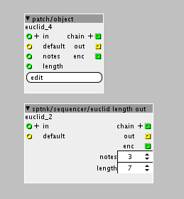

Hey!
I have been trying to make another version of @Sputnki's "sptnk/sequencer/euclid length out" object.
Id like to have input for the notes and for the length and I've succesfully added the input and deleted the parameter spinboxes. But I am having issues with calling up the newly created inputs. I get these errors:
/xpatch.cpp:63:11: error: 'int32_length' was not declared in this scope
if (notes>int32_length)
xpatch.cpp:62:11: error: 'param_notes' was not declared in this scope
int notes=param_notes;
euclidian mod.axp (3.5 KB)

Any help would be appreciated.